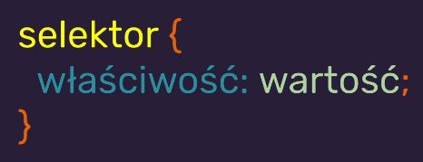
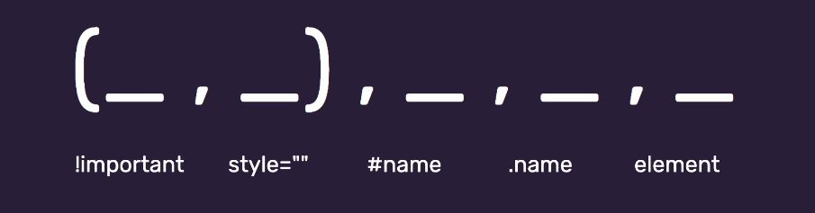

Notatki CSS
CSS = Cascading Style Sheets (Kaskadowe Arkusze Stylów)
Lekcja W02E04 CSS
I
-> CSS odpowiadają za prezentację treści strony
-> CSS nie mają jednej wersji (rozwój modułów) - potocznie mówi się, że aktualna wersja to 3
-> Przeglądarki potrafią różnie interpretować CSS co prowadzi do tego, że pisanie stylów CSS powoduje wiele frustracji u programistów (ale może też być niezłym wyzwaniem)
-> Wpływają na wygląd elementów HTML na ekranie, wydrukach itp.
-> Składnia CSS to reguły
-> Pliki zawierające kod CSS mają rozszerzenie .css
-> Jednak istnieje możliwość korzystania z reguł CSS bez używania zewnętrznych plików (style nie muszą znajdować się w pliku CSS)
-> Aby użyć stylów znajdujących się w osobnym pliku korzystamy z odpowiedniego znacznika HTML ("link" & "/link"), który dodaje się w sekcji "head" dokumentu HMTL
Lekcja: W03E04 CSS II
-> Rekomendacją Maćka Korsana jest aby dodawać klasy (atrybut "class") do wszystkich elementów i unikać zagnieżdżeń
Budowa reguły CSS
Lekcja W02E04 CSS I
1. Reguła CSS składa się z "selektora", nawiasu otwierającego "{" i zamykającego "}" oraz z "właściwości", które podajemy w środku nawiasów
2. Bardzo ważne jest aby dodać ";" na końcu linii (po wartości), brak tego znaku na końcu każdej linii (wewnątrz selektora) to błąd

Lekcja: W03E04 CSS II
-> Reguły CSS mogą referować do klas nadawanych znacznikom HTML przez atrybut "class">
Zapis takiej reguły (w pliku .css) jest następujący:
.nazwa klasy {
właściwość: wartość;
}
TUTAJ BĘDZIE OBRAZEK
gdzie "." oznacza właśnie klasę
Stylowanie (absolutnie wszystkiego) tą metodą jest dobrą praktyką polecaną przez Maćka Korsana (nawet jeśli mamy tylko jeden element w danej klasie)
Lekcja: W03E04 CSS II
-> Reguły CSS mogą także referować do konkretnych znaczników HTML w kodzie oznaczonych przez atrybut "id"
Zapis takiej reguły (w pliku .css) jest następujący:
#nazwa id {
właściwość: wartość;
}
TUTAJ BĘDZIE OBRAZEK
gdzie "#" oznacza właśnie id
Stylowanie tą metodą nie jest dobrą praktyką i nie jest polecane przez Maćka Korsana
Specyficzność w CSS (priorytet stylowania)
Lekcja: W03E04 CSS II
Jeśli specyficzność jest równa, pierwszeństwo ma selektor "bliżej" stylowanego elementu
